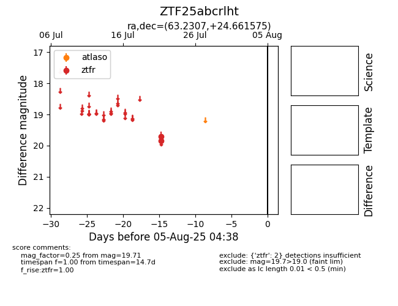

Target ZTF25abcrlht at 2025-08-05 04:38, see:
FINK: fink-portal.org/ZTF25abcrlht
Lasair: lasair-ztf.lsst.ac.uk/objects/ZTF25abcrlht
ALeRCE: alerce.online/object/ZTF25abcrlht
alt names
ZTF25abcrlht (ztf,fink)
coordinates:
equatorial (ra, dec) = (63.2307,+24.66158)
galactic (l, b) = (170.6875,-19.00225)
photometry
last ztfr=19.71
2 ztfr detections
